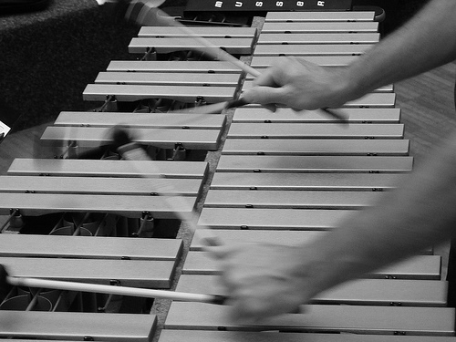

|  |
Random Facts
- I am a computer scientist and jazz musician.
- I enjoy analyzing and designing systems like math, music, and languages.
- Some of my favorite musicians (aside from my parents) are Mike Manieri, Stefon Harris, Bill Evans, Chick Corea, Jaco Pastorius, Rocco Prestia, Aretha Franklin, and James Brown.
- A few of my favorite bands are Tower of Power, Earth Wind and Fire, Gordon Goodwin's Big Phat Band, and Return to Forever.
- Some of my favorite jazz standards are Nardis, A Night In Tunisia, Bernie's Tune, Samba De Orfeu, and Beautiful Love.
- Though I am a vibraphonist, those are not my arms on the left. They are Joe Locke's.
- My other hobbies include playing and watching baseball, composing and arranging music, skiing, and reading.
- Though I have interests in music and computer science, I unfortunately am not the Alex Strong who, with Kevin Karplus, invented an algorithm to synthesize plucked strings and percussion and published a paper in 1983.
- Having grown up in Manhattan, I am a Yankees fan.
- Ernie Harwell was my seventh cousin, three times removed.
- Sometimes, I like to take nice long bike rides by the Hudson River or over the George Washington Bridge.
- I also like problem solving and working on projects like this website, the first one I ever made (mostly) from scratch.
- I've studied Latin for 5 years (most recently in fall 2014) and won a dictionary from the National Latin Exam in 2013.
- I was born in New Hampshire, but my family moved to New York City when I was two years old.
|
|